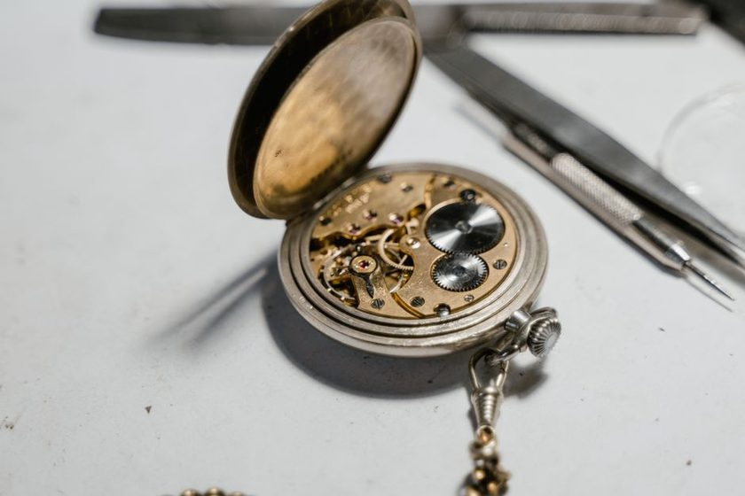
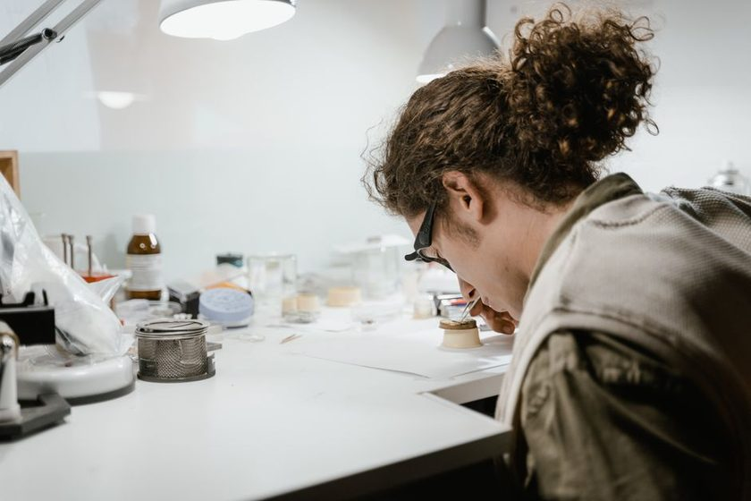
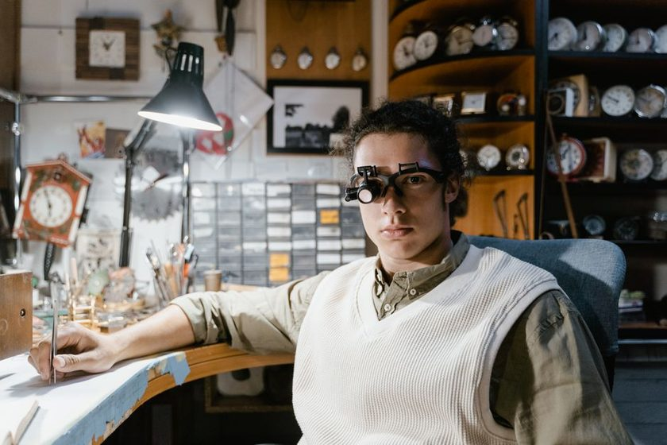

Set — the permanent curvature a spring keeps after being flexed past its elastic limit. Distinct from the ordinary elastic curl every mainspring shows when simply relaxed.
Pull a mainspring out of its barrel and it tells you almost everything before you've measured anything. A fresh spring wants to spring — pull it free and it snaps into a tight, even coil almost too quick to watch. A spring that has taken a set does something else: it opens lazily into loose, uneven turns and simply sits there, the way old wrapping paper holds a curl long after the gift underneath is gone. I've had that difference alone explain a stubborn +8s/day rate that no regulator-arm fiddling would touch, because the fault wasn't in the balance at all. It was upstream, coiled inside a barrel, in a spring that had quietly stopped doing the job it once did.
What "Set" Actually Means
Every mainspring flexes within an elastic range and, ideally, returns close to its original curvature each time it's wound down. Set happens when a spring has been bent past that range often enough, or held there long enough, that the metal remembers the deformation. Older blued-steel springs tend to set more readily, especially after years of full winds left to sit, or the old habit of forcing a crown past where it wanted to go on movements without a proper mainspring stop. Modern white-alloy springs, the Nivaflex family and its relatives, resist this considerably better — a temper that tolerates repeated compression without much permanent change. That's not a reason to assume any spring is immune, only that set arrives sooner in an older or lower-grade spring.
How a Set Spring Behaves at the Bench
With the barrel open and the bridle freed, a healthy mainspring coils down almost on its own — it wants to be smaller than the barrel, settling into a tight, consistent spiral, each turn roughly parallel to the last. Lay a set spring on the same mat and watch instead: the coils stay open, the diameter barely shrinks past what the barrel forced on it, and the spiral is uneven, sometimes egg-shaped, sometimes with a plain kink where one turn refused to close. I check this against the barrel's own inside wall — a fresh spring self-coils noticeably smaller than that wall; a set spring often coils to close to the same diameter it was confined to, as if it never really left.
An old bench saying I picked up early on has stuck with me: a mainspring that won't stand up on its own has already told you its answer — everything after that is just confirming what the coil already said.
Beyond shape, there's motion worth reading too. Hold the outer coil loosely between two fingers, let the rest of the spring rest on the mat, then release it and watch it recoil — a fresh spring snaps closed with real speed and a faint, audible tick as the turns meet each other. A set spring closes slowly, if at all, with none of that snap; sometimes it just settles a little tighter and stops, well short of a proper coil. It's not a precise measurement, but after enough springs pass through your hands the difference between one that wants to close and one that has to be persuaded becomes obvious by feel alone.
What It Does to Torque Delivery and Power Reserve
A mainspring doesn't deliver torque evenly across its wind — a fully wound spring pushes hardest near the top, tapers through a "knee" partway down, then trails off toward the last hours of reserve. A set spring compresses that whole curve: peak torque near full wind is lower to begin with, since the spring is already partly relaxed into its deformed shape, and the decline toward the end arrives sooner and steeper. Practically, that shows up as amplitude that looks acceptable right after a full wind but falls off faster than expected over the following day, and as a power reserve shorter than spec even at full wind. Isochronism — a watch's tendency to hold close to the same rate whether nearly full or nearly run down — tends to suffer first, worth reading alongside why a watch runs fast right after a full wind, since both trace back to the same torque curve.
Put next to each other, the differences tend to line up consistently enough to write down.
| Sign | Fresh mainspring | Set mainspring | What it means at the bench |
|---|---|---|---|
| Coil out of barrel | Tight, even spiral, well smaller than barrel wall | Loose, open, uneven turns near barrel diameter | Visual read, before any measurement |
| Recoil test | Snaps closed quickly, audible tick | Slow, partial, or absent closure | Feel-based, confirms the visual read |
| Amplitude over 24h | Gentle, steady decline | Sharp drop in the last third of reserve | Timegrapher trend, not a single reading |
| Power reserve | Matches or exceeds movement spec | Noticeably short of spec at full wind | Compare against the movement's rated reserve |
| Typical cause | Normal service-interval wear | Age, repeated overwinding, long storage fully wound | Informs whether to replace or simply service |
Reading It on the Timegrapher
None of the bench tests above replace putting the movement back together and watching the numbers. Once the spring is reinstalled and the watch is fully wound, reading amplitude on a timegrapher across several hours — not just once — is what confirms a set spring's effect on delivery. Look for amplitude that starts normal, holds through the first half of the reserve, then drops faster than the movement's usual curve toward the end. A few signs are worth checking together, not any single one alone:
- Amplitude within spec an hour after full wind, but down sharply by hour eighteen or twenty
- Power reserve running an hour or more short of the movement's rated figure
- Rate that drifts noticeably slower as the reserve empties, beyond ordinary positional variance
- A mainspring that, out of the barrel, already showed the loose-coil and slow-recoil signs above
When to Replace, When to Leave It
A mild set on an old spring still delivering full amplitude and a reasonable reserve isn't automatically a reason to replace it — some looseness after decades of winding is simply what the metal has done, and it may still serve the movement well for years to come. What tends to justify a new spring is the combination: a coil that won't close, a recoil that barely happens, amplitude that falls off sharply late in the reserve, and a power reserve well under spec even at full wind. Replacement means matching the manufacturer's dimensions closely — thickness, width, and length all affect the torque curve, and a mismatched spring can introduce its own version of the problems it was meant to fix.

The Case for Re-Oiling Every Five Years
Synthetic oils migrate and oxidize long before they run dry — the five-year interval is about viscosity, not depletion.

The Kitchen-Table Bench: What You Actually Need
A loupe, a set of screwdrivers, a case knife, and patience — most of what's marketed as essential is not.

Positional Error and Why It Isn't a Flaw
A movement that gains in dial-up and loses in crown-down is behaving exactly as gravity and geometry predict.